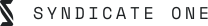
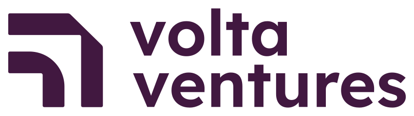
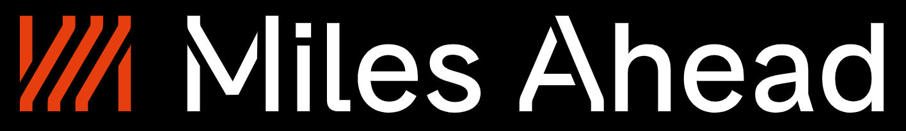
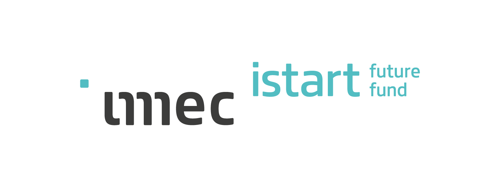
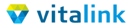

COI ondersteunt initiatieven op drie manieren: door deel te nemen aan een investeringsfonds, door rechtstreeks in een organisatie te participeren, of door een afgebakend project te financieren. Welke vorm de vereniging kiest, hangt af van het initiatief; de toets blijft dezelfde. Elk initiatief hieronder beantwoordt aan de drie basisvoorwaarden: een maatschappelijke uitdaging, een centrale rol voor digitalisering, en een Vlaamse oorsprong.
Opbrengsten uit deze initiatieven vloeien terug naar de vereniging en worden opnieuw ingezet. COI keert geen winst uit.

Syndicate One 2025
Voor een beginnende techondernemer is kapitaal zelden het enige knelpunt: even bepalend is toegang tot mensen die de weg al hebben afgelegd. Syndicate One bundelt meer dan honderd ondernemers en investeerders rond een fonds van 22 miljoen euro, zodat Belgische start-ups in hun vroegste fase naast financiering ook dat netwerk meekrijgen.
Rol van COI: aandeelhouder.

Volta Ventures Seed Fund 2025
Een softwarebedrijf heeft geld nodig nog vóór er een afgewerkt product of een betalende klant is – precies de fase waarin de meeste financiers afhaken. Het seedfonds dat Volta Ventures in 2025 opzette, investeert bedragen vanaf 100.000 euro in jonge B2B-softwarebedrijven uit de Benelux en begeleidt hen door die eerste jaren.
Rol van COI: aandeelhouder.
Capricorn Healthtech Fund II 2025
Gezondheidstechnologie kent een bijzonder lange weg van laboratorium tot patiënt, met klinische validatie en regelgeving onderweg. Dit durfkapitaalfonds financiert bedrijven over die volledige looptijd, zodat toepassingen die de zorg kunnen verbeteren de patiënt ook effectief bereiken.
Rol van COI: medeoprichter.

Miles Ahead 2024
Deep tech en artificiële intelligentie vragen een lange ontwikkeltijd voordat er inkomsten zijn – te lang voor veel financiers. Miles Ahead richt zich op softwarestart-ups in die vroege fase en houdt zo kennis en toepassingen op dit terrein in Vlaanderen.
Rol van COI: aandeelhouder.

imec.istart future fund 2024
Onderzoek dat aan Vlaamse kennisinstellingen ontstaat, bereikt de samenleving alleen als er een bedrijf van komt. Het imec.istart future fund financiert precies die overgang en helpt veelbelovende start-ups de kloof tussen onderzoek en markt te overbruggen.
Rol van COI: medeoprichter en aandeelhouder.

F.T.I. bv 2023
Niet elke maatschappelijke uitdaging vindt vanzelf een technologische oplossing: vaak ontbreekt de partij die het vraagstuk en de techniek samenbrengt. F.T.I. ontwikkelt technologische oplossingen die vertrekken vanuit zo'n maatschappelijk vraagstuk in plaats van vanuit een marktkans.
Rol van COI: medeoprichter en aandeelhouder.
RDY Ventures 2023
RDY Ventures – voorheen Birdhouse Ventures – begeleidt en financiert jonge technologiebedrijven in hun opstartfase. Naast kapitaal krijgen oprichters er ervaring en begeleiding, wat de kans verhoogt dat een veelbelovend idee ook effectief tot een levensvatbare onderneming uitgroeit.
Rol van COI: medeoprichter en aandeelhouder.
Angelwise 2021
Technologische start-ups hebben in hun beginjaren kapitaal nodig op een moment waarop het risico voor één financier te groot is. Angelwise bundelt middelen in een kapitaalfonds en spreidt dat risico, zodat innovatieve Vlaamse ondernemingen de stap van idee naar bedrijf kunnen zetten.
Rol van COI: medeoprichter en aandeelhouder.
Health House 2016
Over technologie in de gezondheidszorg wordt veel gesproken, maar zelden op een manier die voor patiënten, studenten of beleidsmakers tastbaar is. Health House maakt die toekomst zichtbaar en bespreekbaar voor een breed publiek, en versterkt zo het maatschappelijk debat over de rol van technologie in de zorg.
Rol van COI: ondersteuning van het platform.
Hefboom 2015
Verenigingen, sociale ondernemingen en starters uit de sociale economie vinden bij klassieke kredietverstrekkers moeilijk financiering. Hefboom verleent hen krediet en advies, en maakt zo projecten mogelijk die anders stranden op een geweigerde lening.
Rol van COI: aandeelhouder.

Vitalink 2013 - 2014
Zorgverleners werkten lang met gescheiden dossiers, waardoor gegevens over een patiënt niet meereisden van huisarts naar apotheek of ziekenhuis. Vitalink is het Vlaamse platform dat die gegevens veilig deelt. COI financierde de analyse van de journaal- en logfunctionaliteit: het onderdeel dat vastlegt wie welke gegevens raadpleegde, zodat een patiënt kan nagaan wat er met zijn gezondheidsgegevens gebeurt.
Rol van COI: sponsoring van de business-analyse.
Een initiatief voorleggen?
Voldoet uw initiatief aan de drie basisvoorwaarden? Bekijk de criteria en neem contact op.